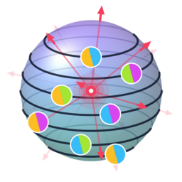
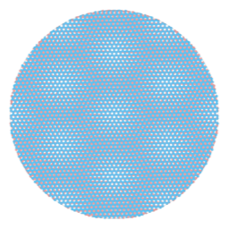
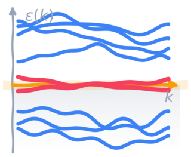
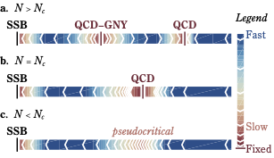

Research Interests
Our research focuses on the intricate physics of strongly correlated quantum matter,
exploring phenomena ranging from flat-band superconductivity and moiré materials
to quantum criticality on the fuzzy sphere.
To tackle these challenging many-body problems, we specialize in advanced numerical
methods — quantum Monte Carlo, tensor networks, and exact diagonalization.

Fuzzy Sphere Regularization
A new computational approach to study quantum phase transitions and conformal field theories using the non-commutative fuzzy sphere geometry.

Twisted Bilayer Graphene
Unbiased quantum Monte Carlo simulations of magic-angle twisted bilayer graphene, revealing insulating and semimetallic phases.

Flat-Band Systems
Interplay of band geometry, quantum metric, and interactions give rise to superconductivity, charge density waves, supersolidity, and other correlated phases in flat bands.

Superconductivity
Mechanisms of unconventional superconductivity including flat-band enhancement, spin-polaron pairing, reservoir effects, and fundamental bounds on Tc.

Nonequilibrium Dynamics
Investigating many-body quantum systems driven out of thermal equilibrium, including quench dynamics, periodically driven Floquet systems, and transient states in correlated electron materials.
ALF — Algorithms for Lattice Fermions
We are core developers of ALF, an open-source, high-performance auxiliary-field quantum Monte Carlo package for correlated fermions on a lattice. We have contributed to it for over a decade, and it underpins much of the research above.
Our Team
Meet the people driving our research:


Highlighted Publications
Here is a selection of our recent publications, illustrating our research interests and
methods.
A full list of publications can be found here.

Fuzzy Sphere & 3D Ising CFT
Zhu, Han, Huffman, Hofmann, He
Phys. Rev. X 13, 021009 (2023)
Directly demonstrated emergent conformal symmetry in the 3D Ising transition using a novel fuzzy sphere regularization, verifying a conjecture by Polyakov.

Twisted Bilayer Graphene QMC
Hofmann, Khalaf, Vishwanath, Berg, Lee
Phys. Rev. X 12, 011061 (2022)
First unbiased Monte Carlo simulations of realistic magic-angle TBG, revealing insulating ground states, pseudogap behavior, and temperature-dependent spectral features.

Flat-Band Superconductivity, CDW & Supersolidity
Hofmann, Berg, Chowdhury
Phys. Rev. Lett. 130, 226001 (2023)
Demonstrated coexisting superconductivity and charge density wave order (supersolid) in flat bands with tunable quantum metric, and the violation of putative stiffness bounds.

Deconfined Criticality & SU(2) QCD on the Fuzzy Sphere
Huffman, Zhou, He, Hofmann
Phys. Rev. D 114, 034503 (2026)
Extended the fuzzy-sphere approach to SU(2) QCD3 with N flavors, finding evidence for a critical phase for N ≥ 4 and extracting scaling dimensions consistent with large-N expectations.